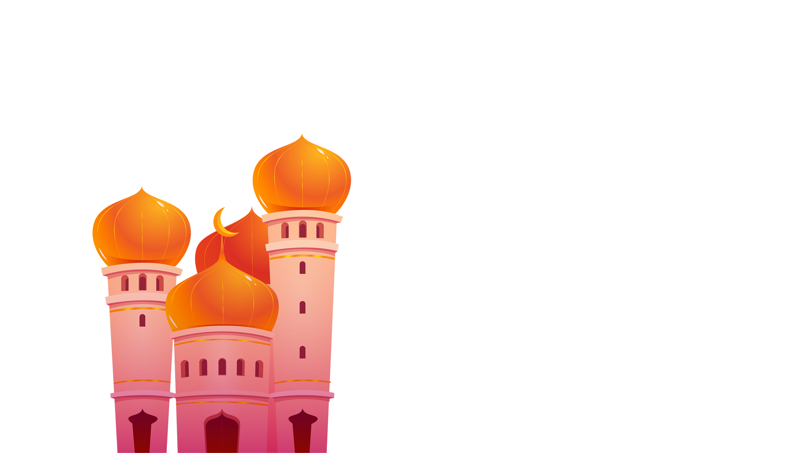
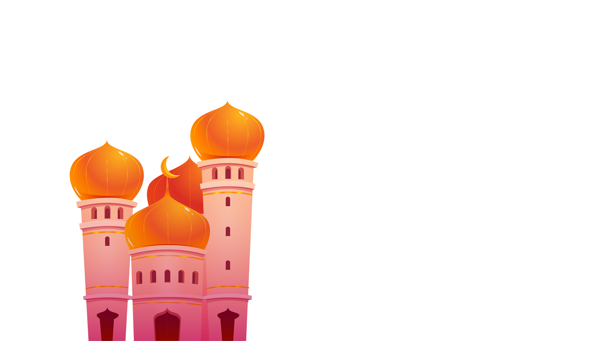
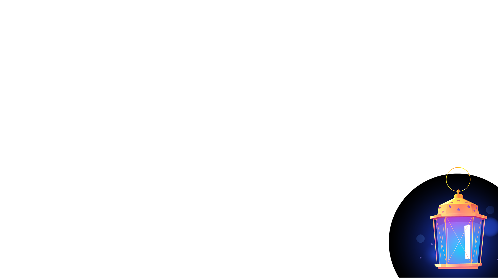
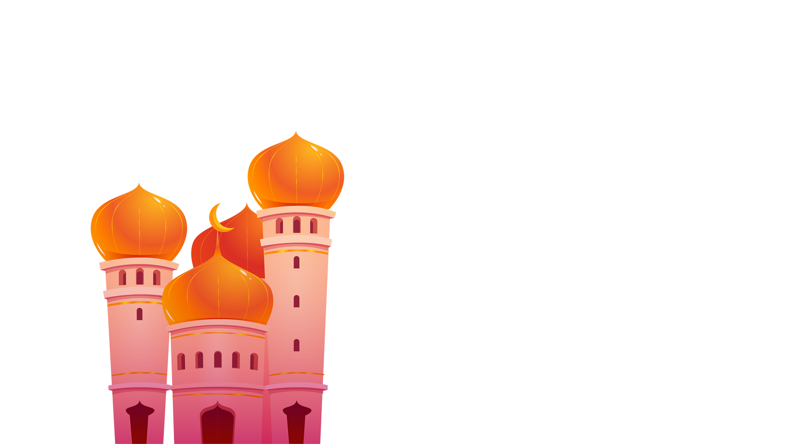
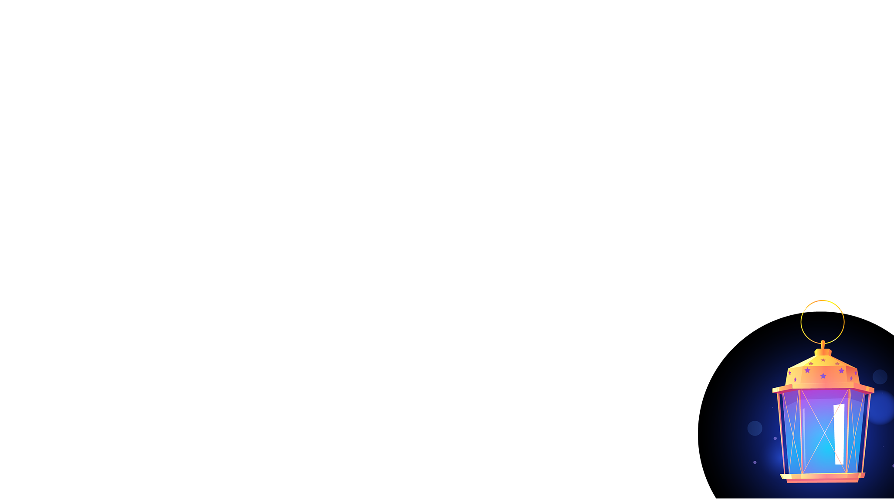
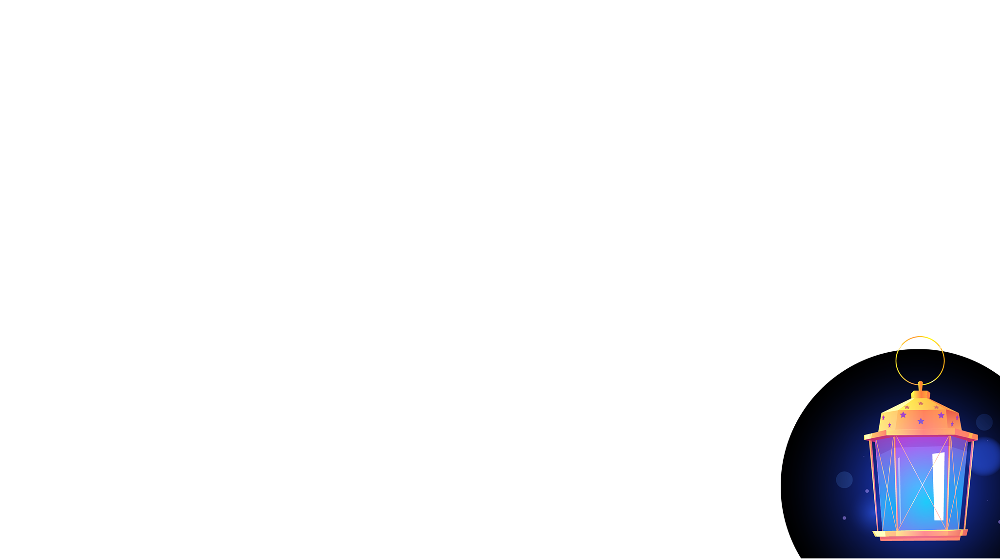
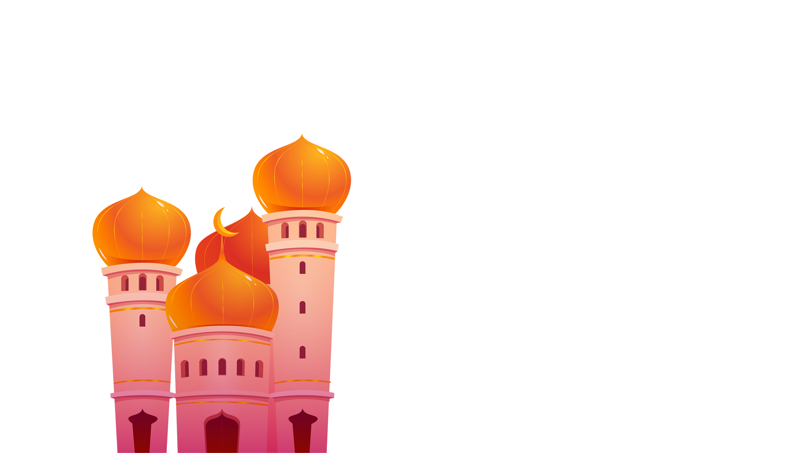
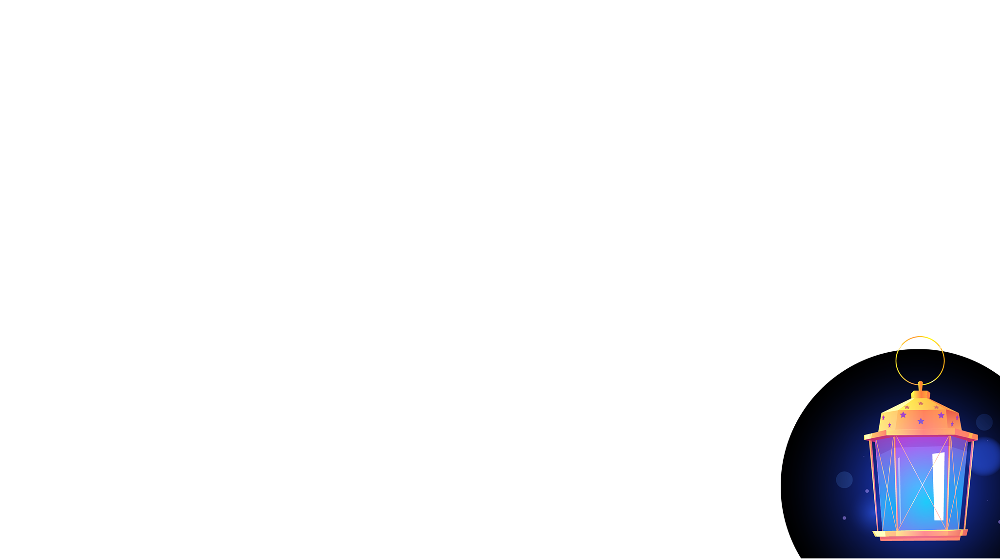

Eid Mubarak
 

 





Eid al-Fitr (Arabic: عيد الفطر, romanized: ʿĪd al-Fiṭr, lit. 'Feast of Breaking the Fast',
also called the "Festival of Breaking the Fast" or Lesser Eid, or simply Eid, is a
religious holiday celebrated by Muslims worldwide that marks the end of the month-long dawn-to-sunset
fasting of Ramadan.The date for the start of any lunar Hijri month varies based on when the new moon is
sighted by local religious authorities, so the day of celebration varies by locality. The holiday is known
under various other names in different languages and countries around the world.
Eid al-Fitr has a particular salat (Islamic prayer) that consists of two rakats (units) generally performed
in an open field or large hall. It may only be performed in congregation (jamāʿat) and features six
additional Takbirs (raising of the hands to the ears while saying "Allāhu ʾAkbar", meaning "God is the
greatest") in the Hanafi school of Sunni Islam: three at the start of the first rakat and three just before
rukūʿ in the second rakat. Other Sunni schools usually have 12 Takbirs, similarly split in groups of seven
and five. In Shia Islam, the salat has six Takbirs in the first rakat at the end of qira'a, before rukūʿ,
and five in the second. Depending on the juristic opinion of the locality, this salat is either farḍ
(فرض, obligatory), mustaḥabb (strongly recommended) or mandūb (مندوب,
preferable). After the salat, Muslims celebrate the Eid al-Fitr in various ways with food ("Eid cuisine")
being a central theme, which also gives the holiday the nickname "Sweet Eid" or "Sugar Feast".
History
Eid al-Fitr was originated by the Islamic prophet Muhammad. According to certain traditions, these festivals
were initiated in Medina after the migration of Muhammad from Mecca. Anas, a well-known companion of the
Islamic prophet, narrated that, when Muhammad arrived in Medina, he found people celebrating two specific
days in which they entertained themselves with recreation and merriment. At this, Muhammad remarked that
Allah had fixed two days of festivity: Eid al-Fitr and Eid al-Adha.
General rituals
Traditionally, Eid al-Fitr begins at sunset on the night of the first sighting of the crescent moon. If the
moon is not observed immediately after the 29th day of the previous lunar month (either because clouds block
its view or because the western sky is still too bright when the moon sets), then the holiday is celebrated
the following day.[12] Eid al-Fitr is celebrated for one to three days, depending on the country.[13] It is
forbidden to fast on the Day of Eid, and a specific prayer is nominated for this day.[14] As an obligatory
act of charity, money is paid to the poor and the needy (Zakat-ul-fitr) before performing the ‘Eid prayer.
Eid prayer and eidgah
Further information: Eid prayers and Eidgah
The Eid prayer is performed by the congregation in an open area such as a field, community center, or
mosque.[13] No call to prayer is given for this Eid prayer, and it consists of only two units of prayer,
with a variable amount of Takbirs and other prayer elements depending on the branch of Islam observed. The
Eid prayer is followed by the sermon and then a supplication asking for Allah's forgiveness, mercy, peace
and blessings for all living beings across the world. The sermon also instructs Muslims as to the
performance of rituals of Eid, such as the zakat.[16] The sermon of Eid takes place after the Eid prayer,
unlike Friday prayer which comes first before prayer. Some imams believe that listening to the sermon at Eid
is optional.[17] After the prayers, Muslims visit their relatives, friends, and acquaintances or hold large
communal celebrations in homes, community centers, or rented halls.
Sunni procedure
As ritual dictates, Sunnis praise Allah in a loud voice while going to the Eid prayer:
Allāhu Akbar, Allāhu Akbar, Allāhu Akbar. Lā ilāha illà l-Lāh wal-Lāhu akbar, Allahu akbar walil-Lāhi l-ḥamd
Recitation ceases when they get to the place of Eid or once the Imam commences activities.[18]
The prayer starts by doing "Niyyat" for the prayer, before the Takbir is said by the Imam and his followers.
Next, "Takbeer-e-Tehreema" is recited, followed by Allahu Akbar three times, raising hands to the ears and
dropping them each time, except for the last when the hands are folded. The Imam then reads the
Surah-e-Fatiha, as well as other Surah. The congregation performs Ruku and Sujud as in other prayers. This
completes the first rakat.
The congregation rises up and folds their hands for the second rakat, during which the Imam recites Surah
Fatiha and another Surah. After this, three Takbirs are called out just before the Ruku, each time raising
hands to the ears and dropping them. For the fourth time, the congregation says Allah o Akbar and
subsequently goes into the Ruku. The rest of the prayer is completed in the regular manner. This completes
the Eid prayer. After the prayer, there is a khutbah.
Shia procedure
Prayer starts with the Niyyat followed by five Takbirs. During every Takbir of the first rakat, a special
Dua is recited. Then, the Imam recites Sūrat al-Fātiḥah and Surat Al-'A`lá and the congregation performs
Ruku and Sujud as in other prayers. In the second Rakat, the same above steps (five Takbeers, Sūrat
al-Fātiḥah and Surat Al-'A`lá, Ruku and Sujud) are repeated. After the prayer, Khutbah starts.
Post-prayer celebration
During the Eid celebration, Muslims greet each other by saying 'Eid Mubarak', which is Arabic for "Blessed
Eid". As it comes after a month of fasting, sweet dishes and foods are often prepared and consumed during
the celebration. Muslims typically decorate their homes, and are also encouraged to forgive each other and
seek forgiveness. In countries with large Muslim populations, it is normally a public holiday with most
schools and businesses closed for the day. Practices differ by country and region.
Practices and culture by OUR country
India
Special celebratory dishes in India include Lachcha or sivayyan, a dish of fine, toasted sweet
vermicelli noodles with milk and dried fruit (see Sheer khurma).